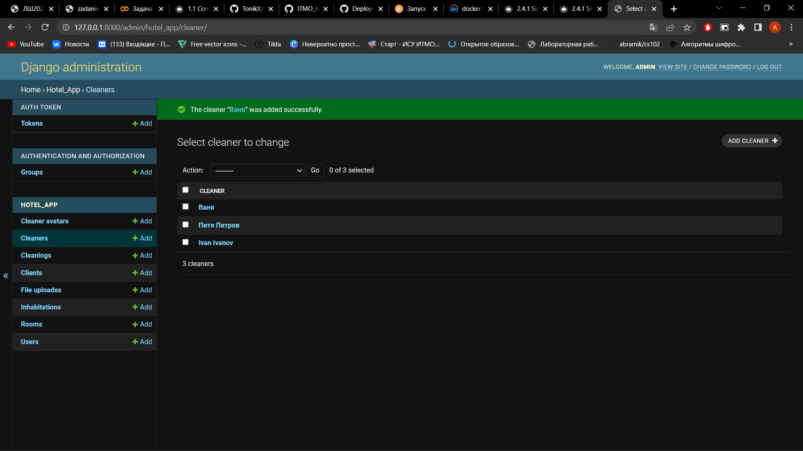
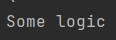
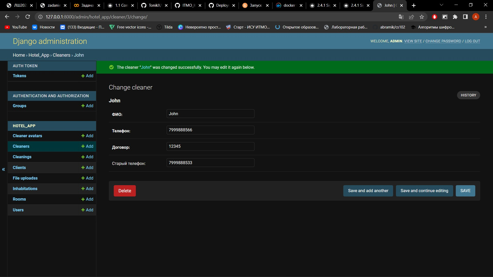
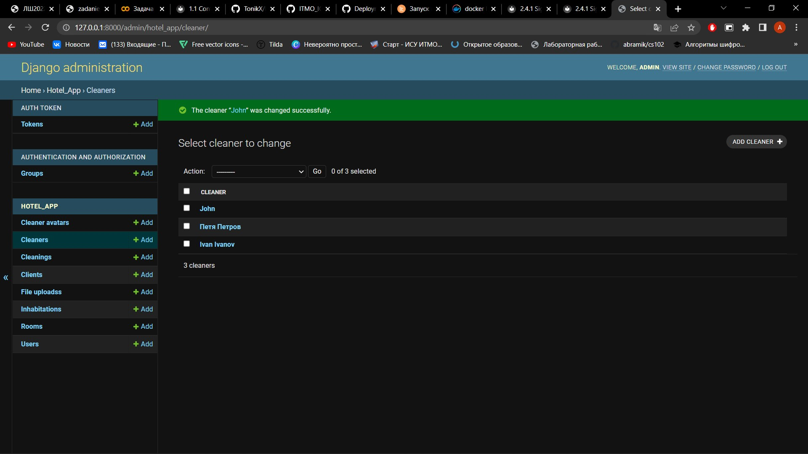
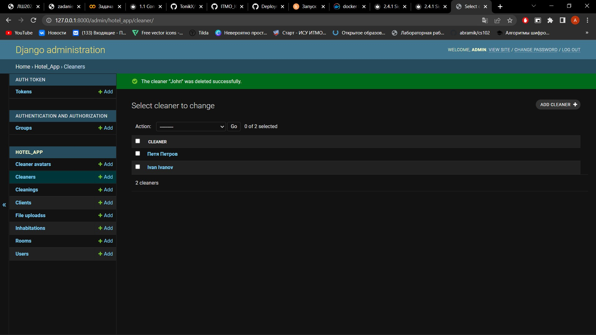
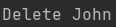

Задание 2.4.1
Реализовать 3 сигнала, которые:
- Вызывает логику, во время создания экземаляра объекта.
- Сохраняет значения выбранных полей в таблице в специальные поля для хранения предыдущих значений при обновлении объекта.
- При удалении объекта записывает информацию об удалении в лог реализованный любым образом.
Для регистрации сигналов добавим конфигурацию ready в apps.py:
class HotelAppConfig(AppConfig):
default_auto_field = 'django.db.models.BigAutoField'
name = 'hotel_app'
def ready(self):
import hotel_app.signals
super().ready()
Сигнал 1: создание уборщика:
@receiver(post_save, sender=Cleaner)
def save_logic(sender, instance, created, **kwargs):
if created:
print("Some logic")
 
Сигнал 2: обновление данных о номерах телефона уборщика с сохранением старого номера:
В модель участника добавлено поле previous_vaccination
@receiver(pre_save, sender=Cleaner)
def update(sender, instance, **kwargs):
try:
prev_instance = Cleaner.objects.get(id=instance.id)
instance.old_phone = prev_instance.phone
except:
pass
Поменяем телефон ещё раз:

Сигнал 3: удаление уборщика и логирование:
@receiver(post_delete, sender=Cleaner)
def delete_log(sender, instance, **kwargs):
print(f"Delete {instance.full_name}")


